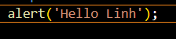
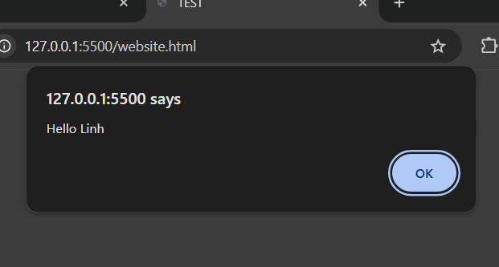
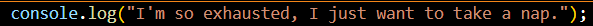
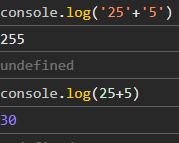
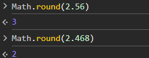

1.JavaScript Basics
-JavaScript là một công nghệ sử dụng để tạo ra các website.
-3 công nghệ được sử dụng: HTML,CSS,JavaScript.
-Syntax: là những quy tắc mà chúng ta có để tuân theo khi sử dụng một chương trình ngôn ngữ như JavaScript.
-Các lệnh cơ bản:
+alert('...');Tạo một của sổ hiển thị văn bảng giữa trang, có thể thay đổi nội dung văn bản. Ví
dụ:


+console.log('...');Phương thức sử dụng để hiển thị thông tin hoặc dữ liệu ra bảnh điều khiển
(console) của trình duyệt, còn là một công cụ quan trọng để gở lỗi, kiểm tra giá trị của biến. Ví dụ:


-Chú ý: trong console.log('...'); nếu đoạn văn bản có dấu nhấy đơn('.') thì cần dùng dấu nhấy
kép(".") để tránh sai cú pháp.
2. Numbers and Math
-JavaScript tuân theo thứ tự các phép tính:
+ (....)
+ [ * / ]
+ [ + -]
Math.round(...) là hàm kết quả là số đã làm tròn đến số nguyên gần nhất.
